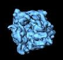

|
|
Three Dimensional Reconstruction of Single Particle Specimens using Reference Projections With Defocus Groups |
 |
This page describes methods for creating a 3D reconstruction from electron micrographs using defocus groups. Once a set of particle images has been obtained, an initial 3D reconstruction is calculated using coarse projection angles. This is followed by refinement, which iteratively adjusts the angles for finer resolution. The CTF is accounted for by computing reconstructions of groups of particles from micrographs with simlar defocus values ("defocus groups"), and CTF-correction is performed when these reconstructions are merged.
An alternative method is available for creating a 3D reconstruction from electron micrographs without defocus groups. The advantages of using defocus groups is as follows. First is that it can readily account for the non-uniform distribution of signal-to-noise in projection data (Penczek, 2012). Second, we find that reconstructions using particle-level CTF-correction sometimes show artifacts when using iterative backprojection methods, such as 'BP RP' or 'BP CG', whereas the use of defocus groups does not present such limitations. However most laboratories have abandoned the use of defocus groups.
In comparison, CTF-correction is applied at the level of windowed particle images offers its own advantages. First, it circumvents one of the approximations when using defocus groups, namely that all particle in a defocus group follow the same CTF profile. At high resolution, where the CTF oscillates more rapidly, this assumption will not hold. Second, parallelization can be more efficient, since groups can be of identical size, independent of the number of particles at each defocus. Third, particles from what would be sparsely populated defocus groups need not be thrown out. Lastly, interoperability with other software packages which correct for the CTF at the level of particle images will be more straightforward.
The procedures are described in greater detail below.
Outline |
Links to further information |
Running SPIDER procedure files |
output files created by that procedure are marked in green., spider spi/dat @proc spi is the procedure file extension,
dat is the project data file extension, and
proc.spi is the procedure file.
Creating new reconstruction projectAt the start of a reconstruction project, a project directory should be set up with the proper subdirectories and procedure files. These procedures should be run in the project directory. |
Create a project directory containing the required subdirectories and procedure files
tar -zxvf spiproject.tar mv myproject acn
If using data from Nature Protocols for testing, you can untar the data set and use the directory structure as your project directory.
The data from the tar archive will then be already in place. However you must replace the procedures from the data set and stack the particle images before using the set of current procedures. The procedure nat2stk.spi reads win/ser******, ../sel_micrograph, good/ngood***, and order_select to stack images by defocus groups and creates:| ¤ | Alignment/data***: |
Stacks of particle images. |
| ¤ | Alignment/sel_particles_***: |
Lists of particle images by group. |
| ¤ | Alignment/sel_group: |
Group selection doc file. |
Create a parameter document file
Some information is stored in project-wide document files that are used by many procedure files. Run the interactive procedure makeparams.spi in the top directory of your project. It makes a document file:| ¤ | params: |
A doc. file containing the reconstruction parameters |
[Optional] Resize reference volume
| ¤ | reference_volume: |
Resized reference volume. |
Place micrograph files in Micrographs directory
Files of the digitized micrographs should be placed in the Micrographs
directory if they are not already there.
For example:
mv /actual/location/of/micrographs/raw* Micrographs/
The procedures below can accept
SPIDER, Hiscan TIFF, PerkinElmer, ZI, and Nikon Coolscan outputs.
Any of these files may have been compressed with
gzip. Because micrographs require so much disk space, it may be desirable to
keep the Micrographs in another location, and make Micrographs a
symbolic link. In that case,
cd to your project directory, remove Micrographs, and
make a symbolic link:
rmdir Micrographs
ln -s /the/actual/location/of/the/micrographs Micrographs
Selecting micrographsGenerate a list of micrographs and screen the micrographs. These procedures should be run in the Micrographs/ directory. |
Create a selection doc file for micrograph file numbers
The procedure makefilelist.spi creates a micrograph selection doc file containing non-consecutive file numbers in the top-level project directory:| ¤ | sel_micrograph: |
Micrograph selection doc file listing the numbers of the micrograph files to be processed. |
Contrast Transfer Function estimationEstimate the defocus of each micrograph by calculating its power spectrum. Then group the micrographs into groups of similar defocus. These procedures should be run in the Power_Spectra directory. |
For more information, see;
Calculate the power spectrum for each micrograph and determine defocus using one of the following three methods
| ¤ | power/pw_avg**** | 2D power spectra, each is an average of many smaller power spectra calculated over the surface of the micrograph. |
| ¤ | power/roo**** | Doc files of 1D profiles of the rotationally averaged power spectra. These doc files can be plotted with gnuplot or pyplot |
| ¤ | power/ctf****: | Doc files of the background-subtracted 1D power spectra. |
| ¤ | defocus: | A doc file of defocus and astigmatism values. |
| ¤ | power/powchk*** |
2D power spectra, each is an average of many smaller power spectra calculated over the surface of the micrograph and half is replaced by an idealized power spectrum. |
| ¤ | defocus: |
A doc file of defocus and astigmatism values. |
Check the rings in the power spectrum images.
Make a montage using WEB (reduction factor 4) to look at these power spectra. They are equivalent to diffraction patterns obtained in the optical diffractometer. It is absolutely important that you screen these spectra before proceeding any further. Things to look out for:
Assign defocus groups according to the power spectrum.
defsort.spi: reads
a defocus doc file generated by one of the above methods,
and the sel-micrograph micrograph selection file
and assigns the micrographs to a tentative defocus group. It creates:
| ¤ | def_sort: |
A doc file with the group assignments sorted by defocus. |
Spectral profiles (that is, the roo*** or ctf*** files) from the same defocus group should be plotted together, to ensure that their zeroes (minima) line up, and do not cancel out. Plot the power spectrum for each micrograph and assign them to defocus groups such that the curves are in phase. Use either:
gnuplot> load 'plotpower.plot'

def_sort, which is used in the next step.
Compute averages for each defocus group
defavg.spi, uses the updated values in def_sort, to compute the averages for each defocus group, creating:| ¤ | def_avg: |
A micrograph selection doc file containg average defocus level, and defocus group assignment. |
| ¤ | sel_group: |
A defocus group selection doc file containing average defocus level. |
Particle Windowing and Initial VerificationA particle picking procedure file analyzes each micrograph, cutting out small windows of likely particle candidates. This is followed by a manual selection process that identifies the good particle images and rejects the bad ones. Particles automatically output by the procedure file are said to be windowed; the subset that are manually chosen are said to be verified. These procedures should be run in the Particles/ directory. |
Select a background noise file
A noise image is required to normalize the backgrounds of the particle images. Do one of the following:| ¤ | noise: |
A noise image. |
tmpnoise/noi***) that are windowed from regions
in the micrograph that appear not to contain any particles.
View the selected noise file.
If it has any structure (i.e. particles or junk), then select another one of the
candidates and copy it to: noise.ext.
Run automatic phase of particle selection.
Either of the following two approaches can be used. They both require the image format conversion procedure: convert_p.spi| ¤ | win/winser****: | Stacked particle images. |
| ¤ | win/sel_particle****: | Particle selection doc file for each micrograph. |
| ¤ | coords/sndc****: | Peak coordinates for particles. |
| ¤ | win/winser_****: | Stacks of particle images for each micrograph. |
| ¤ | win/sel_particle_****: | Particle selection doc file for each micrograph. |
| ¤ | coords/sndc****: | Pixel coordinates for center of particle images. |
[Optional] Low-pass filter particle images before particle selection
The procedure pfilt.spi filters a set of images, adjusting filter settings for each micrograph, based on its defocus and creates:| ¤ | flt/winser_***: |
Stacks of low-pass filtered particle images. |
Verify the windowed particles
This step is optional if using classification-based verification later on. Sort through the output files to eliminate any non-particles. This step is optional if using classification-based verification later on. Sorting can be done in WEB using the Categorize from sequential montage operation. When the particle image files are displayed on the screen, use the mouse to click on each good particle. For each micrograph, save your selections to a file calledgood/good***. (More
details in the SPIDER FAQ and
partpick.html). This creates: | ¤ | good/good***: |
A set of particle selection doc files, one for each micrograph. |
Remove any duplicated particles and list number of picked and selected particles by micrograph
The procedure: renumber.spi creates:| ¤ | good/ngood***: |
A set of particle selection doc files, one for each micrograph, listing unduplicated selected particle numbers. |
| ¤ | percent_selected: |
A doc file listing percentages of automatically picked vs manually selected particles for each micrograph and overall. |
ngood*** files as input.
AlignmentReference images are generated from the reference volume. Data particles are compared to each reference to find the best match, and the corresponding transformations (shifts and rotations) are written to a doc file. Finally, the transformations are applied to the data images, aligning them to the references. These procedures should be run in the Alignment directory. |
Create lists of images in each defocus group
sel_by_group.spi reads ../Power_Spectra/def_avg, ../Power_Spectra/sel_group, and ../Particles/good/ngood**** to create selection document files and a group summary file:| ¤ | sel_particles_***: |
A doc file for each defocus group, listing all the particles in that group. |
| ¤ | sel_group: |
A summary doc file with 4 columns listing: Defocus group, Number of particles, Cumulative number of particles, and Average defocus value for each group. |
Create stacks of images for each defocus group
win2stk.spi reads sel_group, creates stacks:| ¤ | data***: |
A stack file for each defocus group, containing all particle images from that group. |
Create reference projections for alignment from a reference volume
Reference projections (images) are views of the object at known angles. In what follows, angular accuracy is set to 15 degrees, which results in 83 reference projections. A reference volume is needed in the top level project directory to create the projections. The row and column dimensions of the reference volume must match the dimensions of the particle windows. (see resizevol.spi)
refproj.spi reads ../reference_volume and sel_group to create two sets of files:| ¤ | refangles: |
A doc. file from VO EA listing the three Euler angles for each of the projections. |
| ¤ | projs/prj_****: |
Stacked reference images from PJ 3Q corresponding to the angles in the preceeding file. |
projs/prj_001 Align particles to the reference projections
| ¤ | align_01_001: |
Shift and rotation parameters for the best matched projection. |
| ¤ | dala01_001: |
Aligned stack of the particle images. |
| ¤ | align_01_***: |
Shift and rotation parameters for the best matched projections. |
| ¤ | dala01_***: |
Aligned stacks of the particle images. |
Compute AveragesFor all projections, all aligned particles of a given reference view are averaged together. Further particle selection is made by selecting a correlation cutoff threshold to reject some particles. The distribution of particles among projections can be displayed. These procedures should be run in the Reconstruction directory. |
Make particle selection document files listing particles cooresponding to each reference projection
select.spi reads ../Alignment/sel_group, and ../Alignment/align_01_*** to create the following doc files:| ¤ | df***/how_many: |
Lists number of particles associated with each reference view for each group. |
| ¤ | df***/ref_sel???: |
Lists the particles numbers associated with each reference view for each group (from 'VO MQ'). |
| ¤ | how_many: |
Summary file listing total number of particles associated with each reference view. |
Create average images for all projection groups and combine all alignment parameter files into a single summary file (if necessary).
average.spi reads df***/how_many, select/sel***, ../Alignment/sel_group, and ../Alignment/dala01_*** to create the following files for all defocus groups.| ¤ | avg***: |
Stacks of average images for each set of projections. |
| ¤ | var***: |
Stacks of variance images for each set of projections |
The next three operations help to identify a threshold correlation coefficient that describes true particles as opposed to any erroneously selected particles. Create histograms of each defocus group that plots the number of particles vs. the cross correlation value. For example, if the histograms display a bimodal distribution, the higher peak may correspond to actual particles, while the lower peak may show noise. The threshold should be chosen between two such peaks.
Identify a threshold correlation coefficient for selecting true particles.
Create histograms for each defocus group that plots the number of particles vs. the cross correlation value. If the histograms display a bimodal distribution, the higher peak may correspond to actual particles, while the lower peak may show noise. The threshold should be chosen between two such peaks.
cchistogram.spi reads ../Alignment/sel_group, ../Alignment/align_01_***, and align_01_all to to create histograms and a gnuplot control script:| ¤ | hist/cchist_***: |
Set of histogram doc files of cross correlation values by defocus group. |
| ¤ | hist/cchist_all: |
Overall histogram doc file of cross correlation values. |
| ¤ | gnuplot_cchist_***: |
Gnuplot scripts to display group cross correlation values histograms. |
| ¤ | gnuplot_cchist_all: |
Gnuplot script to display overall cross correlation values histogram. |
gnuplot -persist gnuplot_hist_all.ext Compute correlation thresholds for discarding particles
ccthresh.spi reads ../Alignment/sel_group, ../Alignment/align_01_***, and hist/cchist***. Using the given percent cutoff level, it creates:| ¤ | thresh |
Doc file listing CC Value thresholds for each defocus group. |
| ¤ | sav_particles_*** |
Particle selection files listing particle numbers of images with correlation values above the threshold,sorted by correlation value.. |
| ¤ | rej_particles_*** |
Particle selection files listing particle numbers of images with correlation values below the threshold, sorted by correlation value. |
thresh lists, for each defocus group,
the cutoff correlation threshold, and the numbers
of particles above and below the threshold. NB, BECAUSE THE HISTOGRAM 'BINS'
THE VALUES, THE NUMBERS OF PARTICLES ARE
NOT EXACT, AND THEREFORE WILL NOT EXACTLY MATCH THE OUTPUT OF
dftotals.spi.
Use the Montage from doc file operation in
WEB to display the rejected
particles identified in the selection doc file (e.g. rej_particles_001).
The greater the correlation coefficient value, the more
similiar the particle should look to the reference projection.
This will help you determine whether the correlation coefficient threshold that
you chose is appropriate for selecting true particles. Select
Compute Average to view an average of the particles displayed.
The correlation thresholds in thresh may be
edited at this time, if you wish to apply different cutoff thresholds.
Make final selection of particles above the correlation thresholds
dftotals.spi reads ../Alignment/sel_group, ../Alignment/align_01_***, and thresh. It applies the updated cutoff levels from thresh to create:| ¤ | sel_particles_*** |
Particle selection files. |
| ¤ | sel_group_cclim |
Group selection file with updated numbers of particles in each group. |
Check the spatial distribution of views (angular directions) for the reconstruction.
plotrefviews.spi reads
../Alignment/sel_group,
how_many, and
df{***[grp]}/how_many.
It creates script files of gnuplot commands:
| ¤ | gnuplot_view |
Gnuplot script to plot overall histogram of number of particles vs projection view. |
| ¤ | display/gnuplot_views_*** |
Gnuplot scripts to plot histogram of number of particles vs projection view for each defocus group. |
| ¤ | display/angdis_by_group: |
A stack of SPIDER images showing distribution of sample images among various reference projections for each group. |
| ¤ | display/angdis_all_groups: |
Combined SPIDER image file showing distribution of sample images among various reference projections for all groups. |
Use the Montage operation in WEB to display the images.
[Optional] Limit strongly over-represented angular projections
bestim.spi reads
../Alignment/sel_group,
../Alignment/refangles,
df***/how_many, and
df***/ref_sel{***[grp]} to create:
| ¤ | sel_group_cclim |
Group selection file for specified defocus group |
| ¤ | sel_particles_*** |
Particle selection file for specified defocus group |
3D ReconstructionUse the selected aligned particles to create an initial 3D volume. To estimate the resolution of the resulting structure, the particle images are split into two equal sets, and the two resulting reconstruction volumes are compared. These procedures should be run in the Reconstruction directory. |
Split the particle images, create reconstructions, merge reconstructions into final reconstruction.
Split the particle images from each defocus group into two sets, create paired reconstructions, determine resolution for each reconstruction, merge group reconstuctions into final combined reconstruction and compute reconstruction resolution. Choose one of the following two procedures
| ¤ | df***/vol01_sub1: |
Reconstructed volume from first subset of images for each defocus group. |
| ¤ | df***/vol01_sub2: |
Reconstructed volume from second subset of images for each defocus group. |
| ¤ | df***/fscdoc: |
Doc files containing FSC curve for each defocus group. |
| ¤ | df***/ctffile: |
CTF correction file for each defocus group: |
| ¤ | vol01: |
3D reconstruction from entire set of particles. |
| ¤ | combires: |
Doc file containing FSC curve for final reconstruction. |
| ¤ | resolution: |
Doc file containing group number, normalized frequency, and resolution (in Angstroms). |
Check the defocus group volumes by viewing a central slice from each volume
slices.spi reads sel_group_cclim, and df***/vol01_sub1 to create:| ¤ | central_slices: |
Stack of central slices from each first subset defocus group volume. |
Check the FSC curves from the group volumes by viewing a plot of the curves
plotres.spi reads sel_group_cclim, combires, and df***/fscdoc. It creates a text file of gnuplot commands:| ¤ | gnuplot_res: |
Gnuplot script for plotting the resolution curve of each defocus group, along with the combined resolution curve. |

Filter the initial volume
Information at spatial frequencies above the cutoff value is considered to be uncorrelated noise, and should be filtered out.| ¤ | volfq01: |
Filtered volume. |
RefinementRefinement essentially performs the reconstruction steps repeatedly, decreasing the angular resolution of reference projections with each iteration, thereby giving the data particles a chance to find a better approximating reference match each time. Thus the data particles are allowed to "settle in" and find better fitting angles, than the initial choices. Refinement is a computationally expensive operation. Before starting a refinement, check the results of the above reconstructions, to ensure that all defocus groups have reasonable particle volumes. Remove any groups that are defective. These procedures should be run in the Refinement directory. |
The refinement step uses the following input files ('***' denotes group number and '##' denotes iteration number
| ../params: | Parameter definition file. |
| ../Reconstruction/sel_group_cclim: | Group selection file. |
| ../Reconstruction/vol01: | Initial starting volume. |
| ../Reconstruction/sel_particles_***: | Particle selection files. |
| ../Alignment/align_01_***: | Initial alignment parameter files. |
| ../Alignment/data***: | Unaligned stacked image files. |
| input/scattering: | Optional amplitude enhancement scatter file. |
| input/mask: | Optional amplitude enhancement mask file. |
Edit the values in refine_settings.pam to set necessary values for refinement parameters and specify any non-standard input file names.
If you are using PubSub, copy latest SPIDER executable into the
current directory and rename it: spider. e.g.
cp /spider/bin/spider_linux_mp_opt64.18.16 spider
Run either: refine.pam (If using normal serial operation) or pub_refine.pam (If using parallel refinement on a cluster with PubSub)
There are a number of sub-procedures used in refinement: refine_settings.pam, prepare.pam, enhance.pam, grploop.pam, smangloop.pam, mergegroups.pam, endmerge.pam, endrefine.pam, and If you are running on a cluster using PubSub you will also need: publish.perl, pub_refine_start.pam, pub_refine_doc_sync.pam, pub_refine_wait.pam, pub_ref_loop_clone.pam, pub_ref_loop_declone.pam, pub_ref_merge_clone.pam, pub_ref_merge_declone.pam, and pub_fixrefine.pam. Further details are given in the Refinement page. Among the outputs of refinement are volumes, images, and document files. Some of the important outputs are listed here ('***' denotes group number and '##' denotes iteration number):| ¤ | final/align_##_***: |
Alignment parameter doc files |
| ¤ | final/fscdoc##_***: |
FSC curve doc. file |
| ¤ | final/val##: |
Unfiltered volume |
| ¤ | final/vol##: |
Filtered volume from all images |
| ¤ | final/vol##_sub1: |
Filtered volume from first subset of images |
| ¤ | final/vol##_sub: |
Filtered volume from second subset of images |
| ¤ | final/dbpr##_***: |
Resolution curve doc file |
| ¤ | final/bpr##_***: |
Group volume |
| ¤ | final/bpr##_***_sub1: |
Group volume from first subset of images |
| ¤ | final/bpr##_***_sub2: |
Group volume from second subset of images |
| ¤ | final/bpr##: |
Final volume from all images |
| ¤ | final/bpr##_sub1: |
Final volume from first subset of images |
| ¤ | final/bpr##_sub2: |
Final volume from second subset of images |
| ¤ | final/ofscdoc##: |
Overall FSC curve doc file |
| ¤ | resolutions: |
Doc file listing resolution at each iteration. |
Plot the refinement FSC curves
The procedure plotrefres.spi reads input/sel_group, final/resolutions, dres##, dbpr##_***, and dbpr##. It creates two text files of gnuplot commands:| ¤ | gnuplot_refi: |
Plots combined resolution curve for each iteration of refinement. |
| ¤ | gnuplot_refd: |
Plots resolution curve for each defocus group for the last iteration. |
[Optional] View angular data output from Refinement procedure files
The procedure angdisp.spi reads final/align_##_*** and creates angular distribution images:| ¤ | disp_ii_***: |
Set of images showing angular positions from the
align_ii_*** refined alignment
parameter output files. |
| ¤ | diff_ii_***: |
Image showing changes in angular positions from iteration n-1 to iteration n. |
Other Useful Methods |
order.tar, and
project.tar
References |
{kind=link}